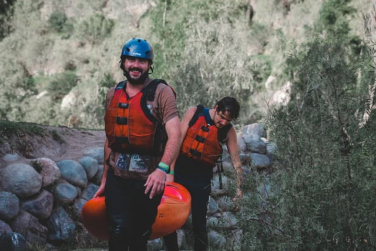

At Water Hunters Co., we believe life is an adventure waiting to be explored. Our purpose is to connect people with the thrill and beauty of nature through unforgettable whitewater rafting experiences. Our motto is simple: Chase the Rapids, Embrace the Adventure!